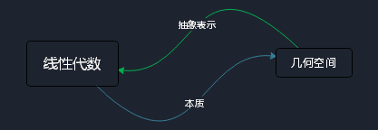
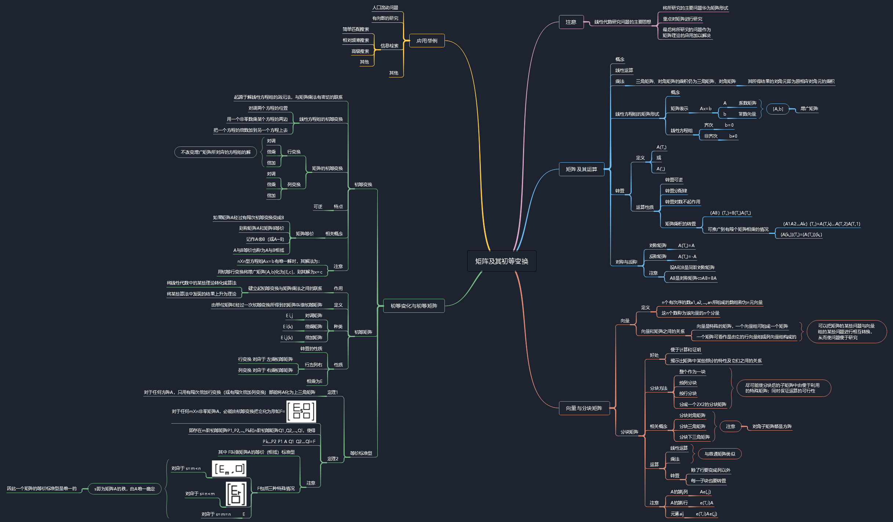
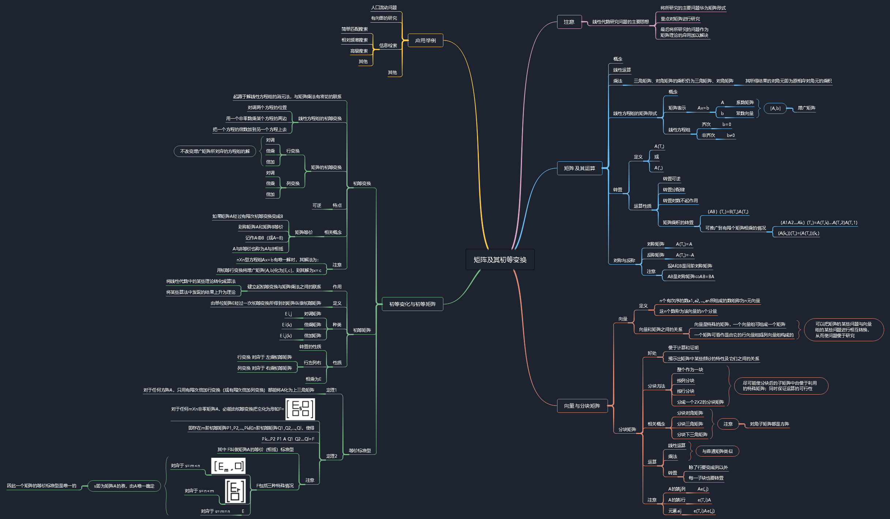

前言
线性代数与几何空间从来不是分离开来的，几何空间是线性代数的本质，而线性代数是几何空间的抽象表示。因此，推荐大家去学习B站 3Blue1Brown 线性代数的本质 系列视频(我从中受益匪浅)。相信你在听了他的课程后会对线性代数有着更深一层次的理解。

矩阵及其初等变换

注
（此为个人笔记，因个人水平限制尚有许多不完善的地方，如有不当之处，欢迎指正，未补充的地方还请自行看书）（可下载图片查看MindMap）
线性代数与几何空间从来不是分离开来的，几何空间是线性代数的本质，而线性代数是几何空间的抽象表示。因此，推荐大家去学习B站 3Blue1Brown 线性代数的本质 系列视频(我从中受益匪浅)。相信你在听了他的课程后会对线性代数有着更深一层次的理解。

（此为个人笔记，因个人水平限制尚有许多不完善的地方，如有不当之处，欢迎指正，未补充的地方还请自行看书）（可下载图片查看MindMap）
四月 22日, 2019
参考资料 清华操作系统课程讨论区——piazza 汇编语言（https://www.jianshu.com/p/4a7b716a2d1b，http://www.ruanyifeng.com/blog/2018/01/assembl...

五月 26日, 2018
2018-06-01-p2flip over //翻页 gutsy girl //勇敢的女孩 delightful //可爱的；讨人喜欢的；令人愉快的 With a charismatic leading lady kids wil...

五月 26日, 2018
2018-06-29-p9humming // n. 哼唱 adj. 嗡嗡作响的，精力充沛的 v. 嗡嗡作响(hum的ing形式)ninny //傻子whiny //烦躁的；爱抱怨的gossipy //漫谈式的；喜欢饶舌的backst...
五月 26日, 2018
2018-07-11-p141, stalk [stɔːk] n. （植物的）茎，秆；（支持叶子、果实和花的）梗，柄；追踪；高视阔步 vt. 追踪，潜近；高视阔步 vi. 高视阔步地走；潜近，偷偷接近 2, flinch [‘f...
五月 26日, 2018
2018-07-20-p161, hay [heɪ] n. 干草 vt. 把晒干 vi. 割草晒干 2, cheek [tʃiːk] n. 面颊，脸颊；臀部 vt. 无礼地向…讲话，对…大胆无礼 n. (Cheek)人名；(英)...
五月 26日, 2018
#2018-06-16 Independence Dayaerial // 空中的；航空的 petty //小的；琐碎的 fate //n.命运 v.注定 Not from tyranny, oppression, or perse...
五月 26日, 2018
基础知识 模拟电路部分半导体器件 注（此为个人笔记，因个人水平限制尚有许多不完善的地方，如有不当之处，欢迎指正，未补充的地方还请自行看书）（可下载图片查看MindMap） 本文地址 https://didongdongdi.gith...
五月 28日, 2019
什么是内联汇编? 内联函数我们可以要求编译器将一个函数的代码插入到调用者的代码中函数实际调用的地方 inline(内联)的作用减少函数调用开销, 同时如果所有实参的值为常量, 它们的已知值可以再编译期允许简化, 因此并非所有的内联...

五月 24日, 2019
树莓派安装teamviewer ID不是邮件中发送的, 而是命令teamviewer info中的ID 本文地址 https://didongdongdi.github.io/2019/05/24/teamviewer安装问题/
五月 19日, 2019
了解SQL 数据库保存有组织的数据的容器(通常是一个文件或一组文件) 表某种特定类型数据的结构化清单 模式关于数据库和表的布局及特性的信息 列表中的每个字段. 所有表都是由一个或多个列组成的. 数据类型所容许的数据的...